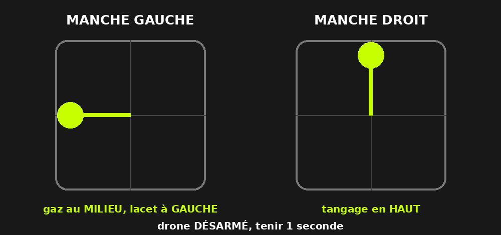
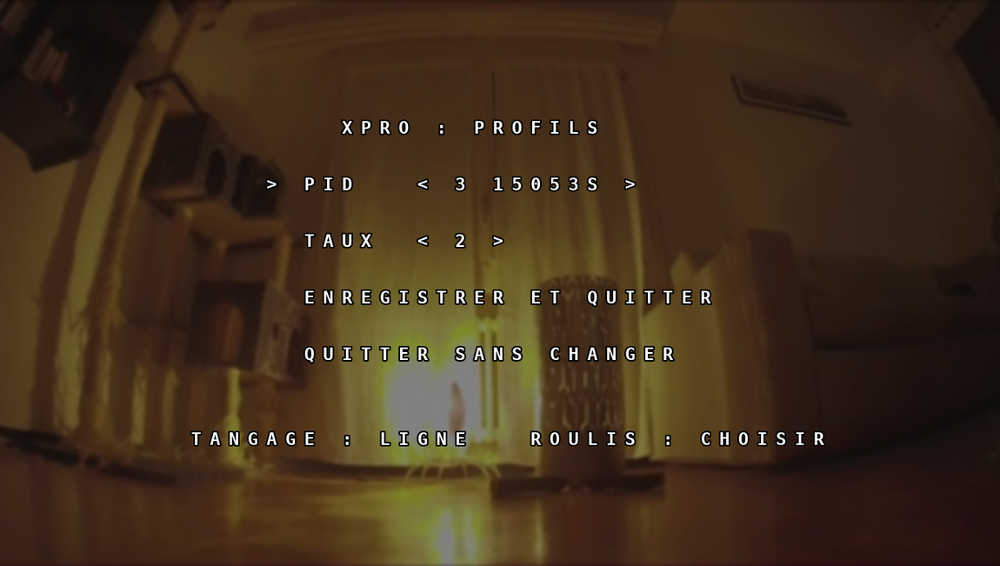
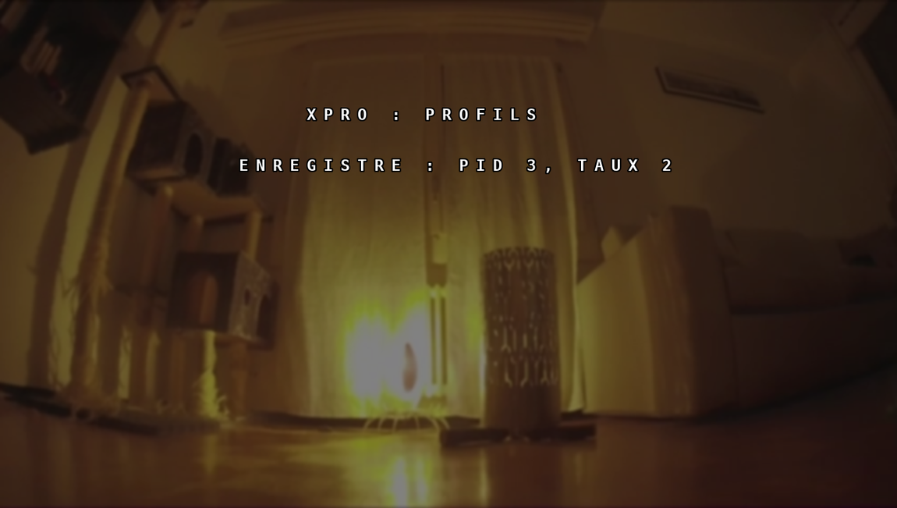

TRUEGLIDE
TRUEGLIDE Menu des lunettes
Depuis le firmware 0.8.4, le menu XPRO : PROFILS s'affiche dans les lunettes et change le profil PID et le profil de taux sur le terrain, aux manches, sans PC. Il sert à passer d'un réglage à l'autre préparé à l'avance (par exemple avec un preset).
Ouvrir le menu
Drone désarmé, radio active, tenir pendant 1 seconde :
- manche gauche : gaz au milieu, lacet à gauche ;
- manche droit : tangage en haut.

Les lunettes affichent alors l'écran XPRO : PROFILS. Lâcher les manches : ils doivent revenir au centre avant le premier mouvement dans le menu.
Choisir les profils

| Manche | Effet |
|---|---|
| Tangage en haut / en bas | Ligne précédente / suivante |
| Roulis à droite / à gauche | Sur PID ou TAUX : profil suivant / précédent (de 1 à 6, puis retour au début). Sur les deux dernières lignes : roulis à droite pour valider. |
Un mouvement par poussée : remettre le manche au centre avant le suivant. Le nom du profil s'affiche à côté de son numéro quand il en a un. Le bas de l'écran rappelle « TANGAGE : LIGNE ROULIS : CHOISIR ».
Enregistrer ou quitter
- ENREGISTRER ET QUITTER (roulis à droite) : les deux profils choisis deviennent actifs et sont enregistrés dans la carte. Le message ENREGISTRE : PID n, TAUX n reste affiché 2 secondes, puis le menu se ferme.
- QUITTER SANS CHANGER (roulis à droite) : le menu se ferme, rien ne change.

Sécurités
- Tant que le menu est ouvert, l'armement est refusé, avec la raison
MENU OSD. - Le menu se ferme tout de suite si la radio est perdue ou si le drone est armé ; il ne s'ouvre que drone désarmé.
Dans status
La commande status de la Ligne de commande a une ligne « menu des lunettes » :
menu ouvert ou fermé, nombre d'ouvertures et nombre d'enregistrements depuis le démarrage.
menu des lunettes (gaz au milieu, lacet a gauche, tangage en haut 1 s) : ferme, ouvertures 0, enregistrements 0